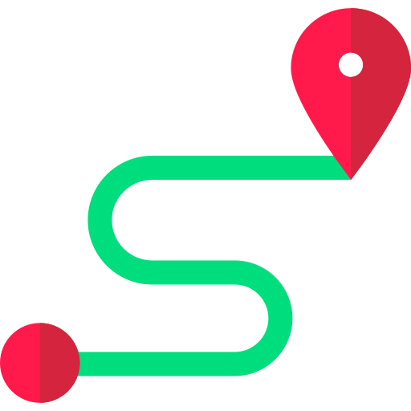
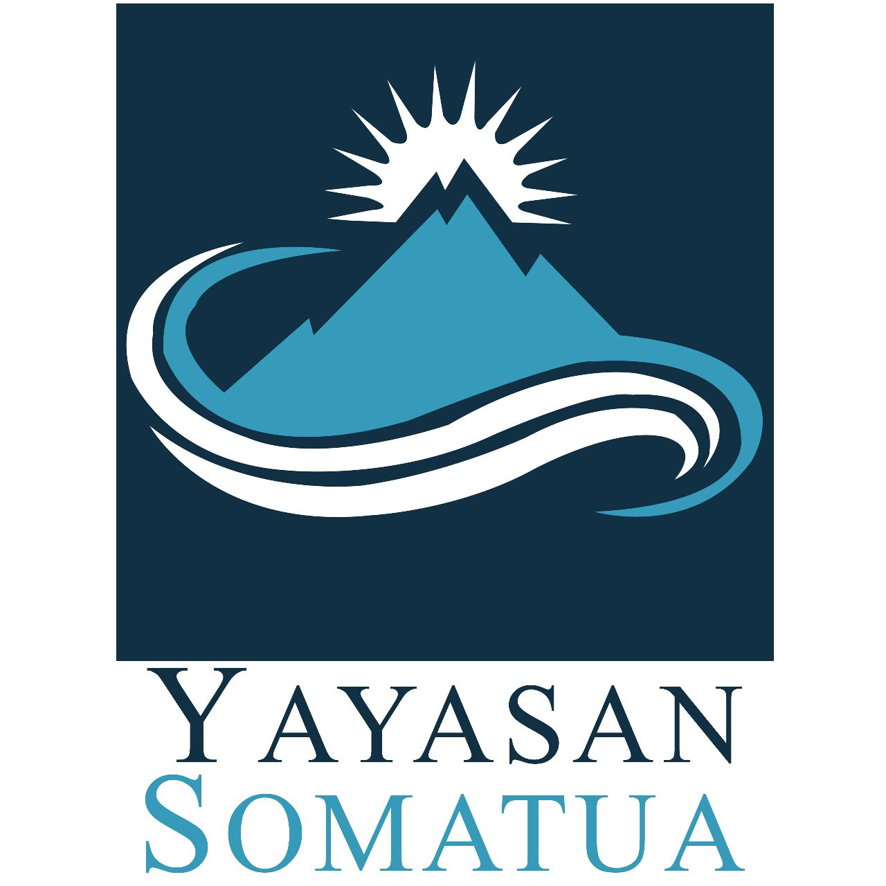
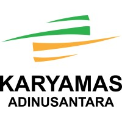
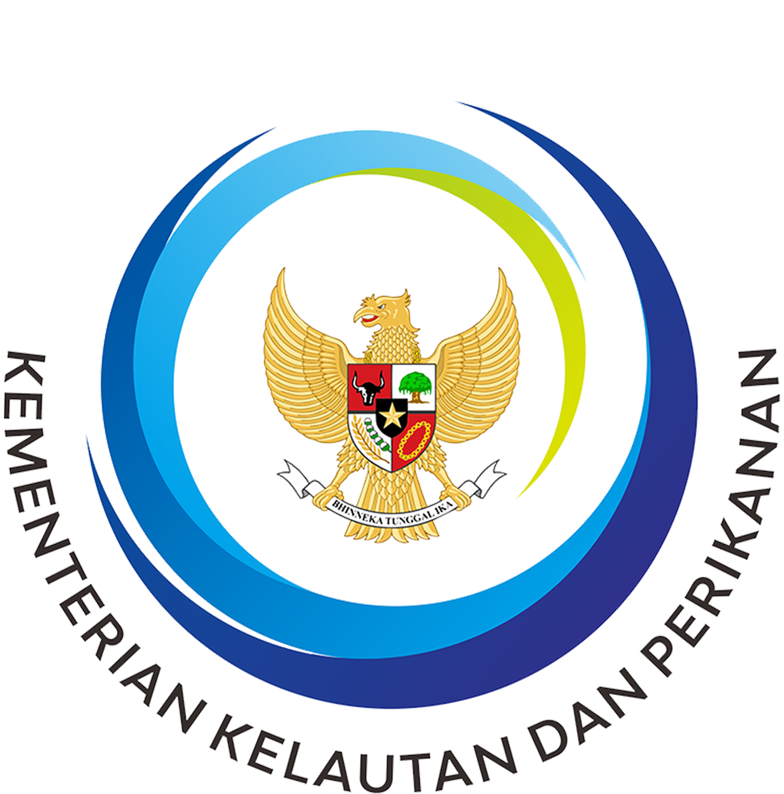
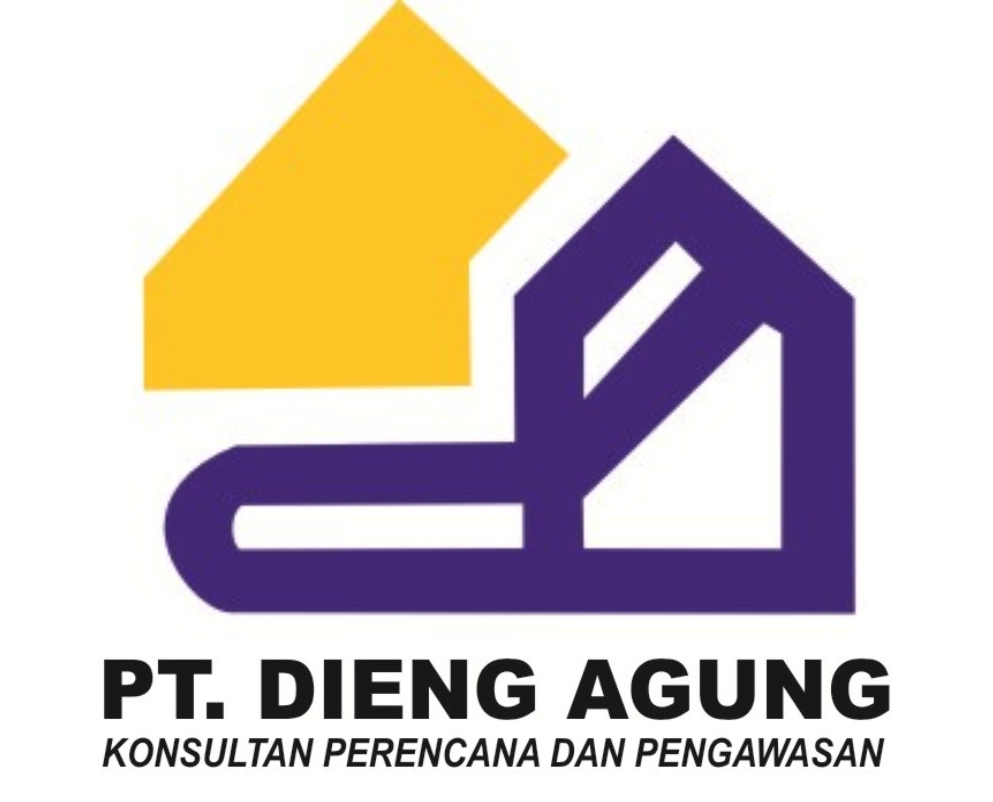

- Skills
-

Geographic information System (GIS) : ArcGIS, Quantum GIS, AutoCAD, ArcView, Global Mapper, SEADAS, GPS, Marxan -
Remote Sensing: ErMpper, ENVI, Agisoft PhotoScan, eCognition, UAV (Unmanned Aerial Vehicle) -
Graphic Design: CorelDRAW, Adobe InDesign, Adobe Photoshop -
Programming: WebGIS (Geonode, ArcGIS Online), HTML/CSS
- Professional Experiences
-
Program Coordinator (February – August 2023)
Somatua Fondation
Timika, Central Papua
- Lead the planning and development of effective programs based on Masterplan for the Acceleration of Development in Papua
- Responsible for technical and program reporting to ensure timely, efficient and well-coordinated program implementation, including data management and analysis (spatial & non-spatial), and measuring overall success
- Coordinate with all relevant stakeholders, with emphasis on major government partner institutions (Badan Badan Pengarah Percepatan Pembangunan Otonomi Khusus Papua/BP3OKP and Papua local government), to ensure proper program preparation and implementation
-
 Land Data Analyst Expert (May 2022 – January 2023)
Land Data Analyst Expert (May 2022 – January 2023)Program to Accelerate Agrarian Reform (One Map Project), Ministry of Agrarian Affairs and Spatial Planning / National Land Agency (ATR/BPN) and The World Bank
Jakarta
- Performed spatial and non-spatial analysis to assess the quality and accuracy of land data in Indonesia towards the digital transformation process
- Developed strategies and technical consideration to improve the quality of spatial and non-spatial/textual data towards accurate Indonesian land data
-
Geographic Information System (GIS) and Regional Expert (January 2021 – April 2022)
Desk Papua Secretariat, Ministry of National Development Planning/ BAPPENAS
Jakarta
- Developed a Grand Design of regional development concepts in Papua (Papua and West Papua Province), consisting of multi-stakeholder collaboration with Ministries, Local Governments, National/International NGOs, and local community/indigenous peoples
- Developed a National Action Plan/Government Work Plan (RKP) in national priority areas for the Acceleration of Welfare Development in Papua
- Conducted a spatial analysis for identifying Regional Potentials to determine priorities and development strategies in the Papua Region
- Developed the Masterplan for the Acceleration of Development in Papua (Rencana Induk Percepatan Pembangunan Papua/RIPPP) for 2022-2041
-
Geographic Information System (GIS) and Spatial Planning Coordinator (Feb. 2012 - July 2013)
USAID Sustainable Ecosystems Advanced (USAID SEA) Project
Jakarta & Ambon, Maluku
- Developed the planning and implementation strategies of Marine Spatial Planning (MSP) or RZWP3K (Rencana Zonasi Wilayah Pesisir dan Pulau-Pulau Kecil) at USAID SEA Project areas (Maluku, North Maluku and West Papua)
- Analyzed, develop and produce the MSP maps (base, thematic & spatial allocation maps) and documents following the standards of the One-Map Policy and the provision of Minister Regulation of MMAF No. 23/2016 on Coastal and Small Island Management Planning
- Conducted field surveys, participatory mapping and public consultation with government agencies, private sector, NGOs, communities & other stakeholders related to the development and implementation of the MSP
- Developing a geoportal for Indonesian marine spatial planning (SEANODE)
- Provided technical and “on-the-job” training to enhance the capacity & competence of government staff in the application of GIS for conducting spatial analysis in the development and implementation of MSP
- Provided technical support related to marine protected area, sustainable fisheries development and law enforcement in the USAID-SEA project areas
-
Remote Sensing & GIS Officer (December 2014 – March 2017)
PT. Karyamas Adinusantara (Sinar Mas Agro Resources & Technology/Smart Tbk Group)
Jakarta
- Conducted spatial analysis for evaluation of land suitability especially in the palm oil plantation sector
- UAV Technician for the survey and land monitoring
- Performed comprehensive analysis of aerial photographs and/ satellite imagery (ortho-photo mosaic, DEM & DTM extraction/Contour, Vegetation Index Analysis, etc)
-
Coastal Planning Expet (May – October 2014)
Balai Pengelolaan Sumberdaya Pesisir dan Laut (BPSPL) Denpasar (Management Unit Technical Implementation of Ministry of Marine Affairs and Fisheries/MMAF)
Gianyar, Bali
- Developed comprehensive document of Marine Spatial Planning (MSP) of Sumba Tengah District
- Conducted research on GIS needs and applications for current legislation
-
Spatial Planner (September 2013 – May 2014)
CV. Tunas Consultant
Semarang
- Developed spatial planning projects & urban design (RTRW, RZWP3K, RDTR, RTBL, Masterplan)
-
GIS Drafter (July 2010 – July 2013)
PT. Dieng Agung Engineering
Semarang
- Drafted GIS database from field survey (GPS) and other sources for developing spatial planning documents (RTRW, RDTR & RTBL)